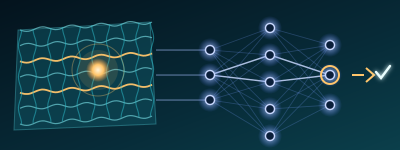

Vuong Dinh Trung
Postdoctoral Research Fellow & Instructor · VinUniversity, Hanoi
I go by Trung. I am a postdoctoral research fellow and instructor at the Center for Materials Innovation and Technology (CMIT) and the College of Engineering and Computer Science, VinUniversity, Vietnam, where I work on smart fibers.
I received my D.Eng. (2025) and M.Eng. (2022) in Smart Materials Science and Technology from Shinshu University, Japan, advised by Prof. Toshiaki Natsuki and Prof. Qing-Qing Ni, and my B.Eng. in Mechanical Engineering from HCMC University of Technology and Engineering.
My research is about fibers that sense: multimaterial fibers, textile and skin-inspired wearable sensors, droplet microfluidics and hydrovoltaic energy harvesting, and increasingly, pairing these fiber systems with machine learning so that a textile can recognize gestures, physiological signals and sound.
I also bring an industry background, as an external designer for the LEGO Group and three years as a corporate leadership trainee at a Japanese molding factory, so I am as comfortable at a CNC machine or a 3D printer as at the lab bench.
Citations and h-index from Google Scholar, peer reviews from ORCID. Updated automatically, last checked October 2026.
Research Interests
Smart fibers
Multifunctional fibers that integrate electrodes, semiconductors and microchannels along their length, for distributed sensing, fiber transistors and lab-on-fiber photonics.
Textile & skin-inspired wearable sensors
Piezoresistive, capacitive and iontronic sensors on fabrics, nonwovens and sponges for pulse-wave, strain, pressure and humidity monitoring.

AI-enabled smart textiles
Machine learning for gesture, physiological-signal and acoustic recognition, and AI-assisted design of fiber devices.
Droplet microfluidics & hydrovoltaic energy
Harvesting and storing energy from water droplets and moisture; intelligent droplet microfluidics with machine-vision control.
Education
Positions
Grants & Projects
Teaching
Skills
Full publication list on the publications page · service and editorial work on the outreach page.